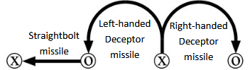
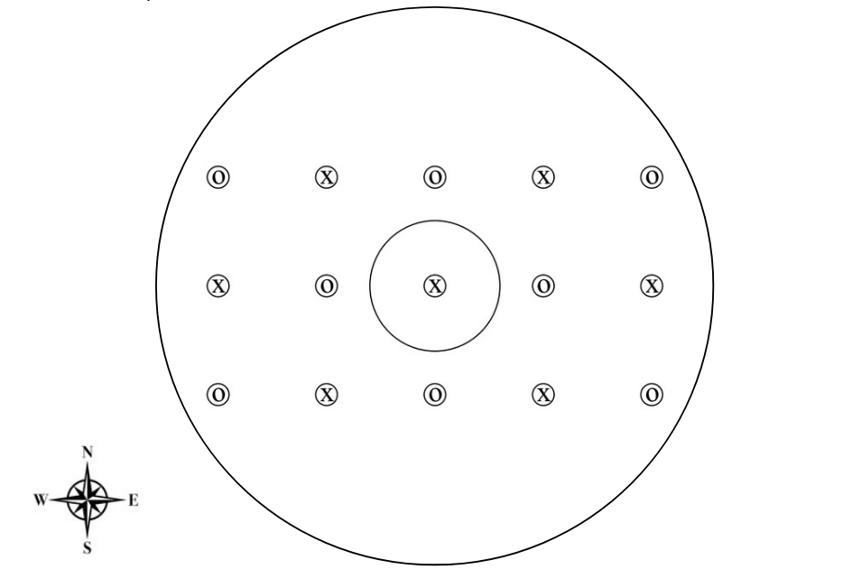

On no! The Xyrmbats' flying saucer has been boarded by the villainous Oombs! Can Captain Xigna keep her position in the center seat?
The Xyrmbats are armed with Deceptor missiles; a Deceptor missile aimed in one direction follows a looping course, ultimately hitting a target 90° from the direction of aim. (In particulary, if a Deceptor missile is aimed at a given target, it will never hit that target.) The Oombs are armed with Straightbolt missiles, which fly straight. (Thus, if a Straightbolt missile is aimed at a target, it wil always hit that target.)

- Every missile was aimed north, south, east, or west (but not necessarily aimed at anyone).
- Every missile fired hit someone adjacent to the firer.
- No two missiles fired by the same creature followed the same trajectory.
- Every Xyrmbat who fired aimed all her missiles in the same direction.
- Every Xyrmbat who fired fired a different number of missiles.
- Every Oomb further east than Captain Xigna got hit exactly once.
- Captain Xigna fired exactly one missile; it was left-handed.
- No Oomb who was aimed at fired.
- Every Oomb who was not aimed at fired exactly one more missile in a north-south direction than in an east-west direction.
- Exactly four missiles were aimed north.
- The difference between the number of missiles a creature fired and got hit with was never exactly two.
